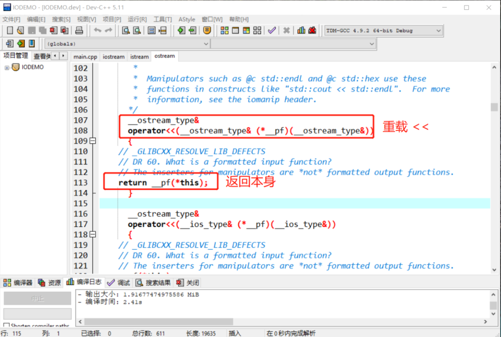
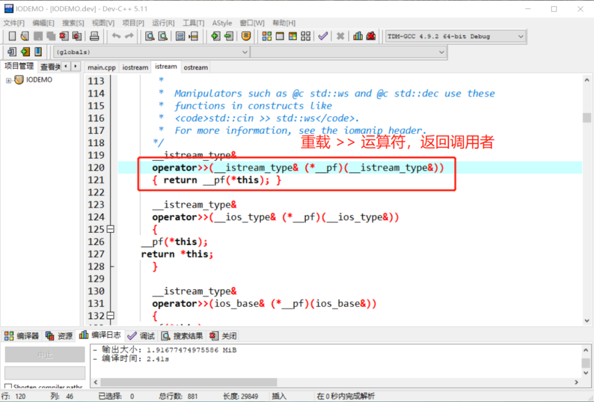
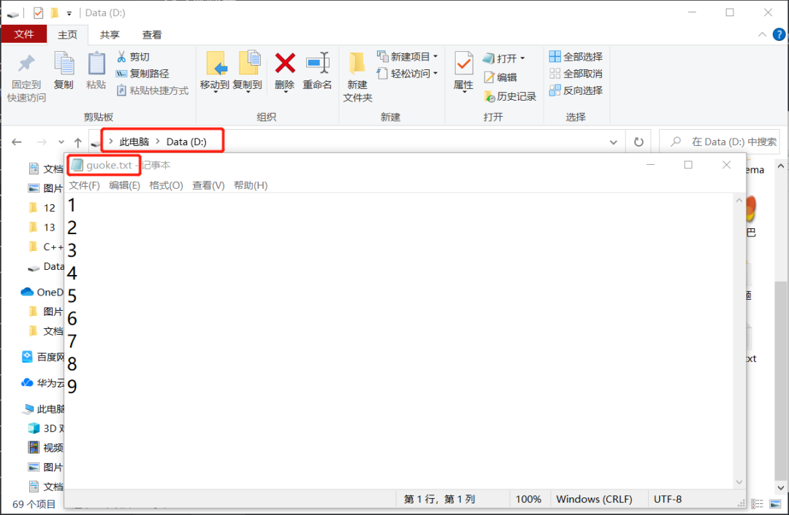
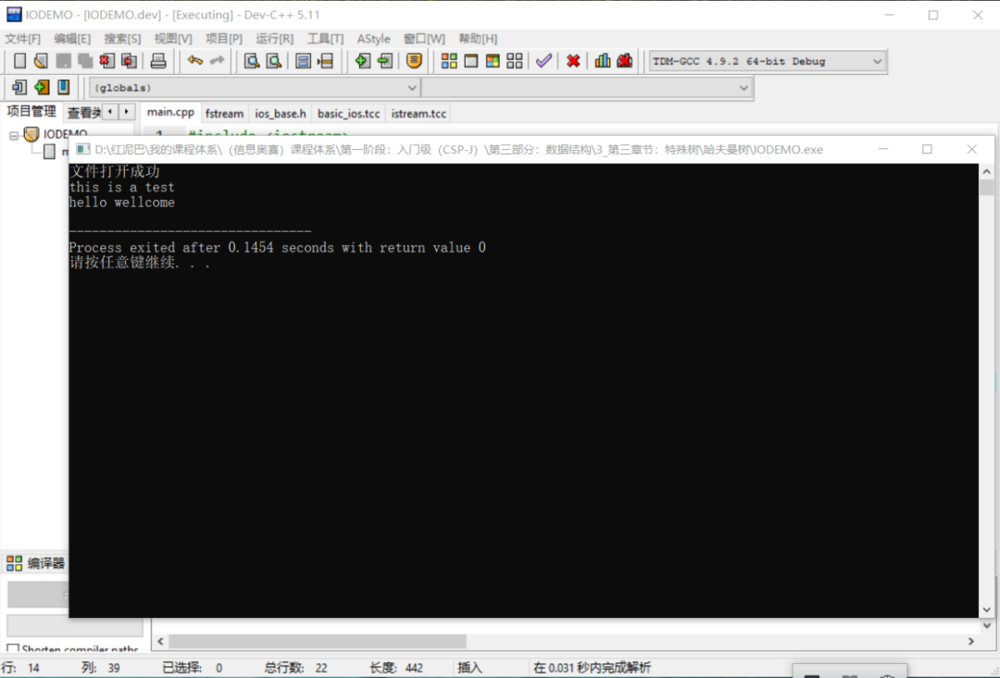
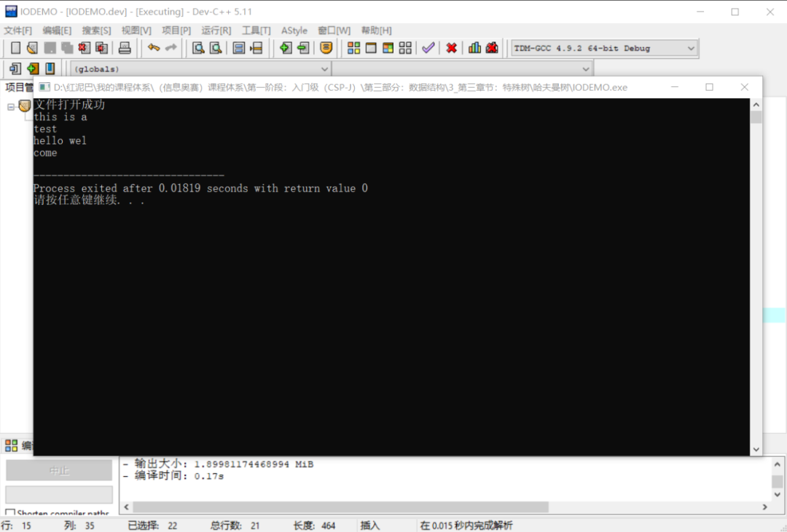
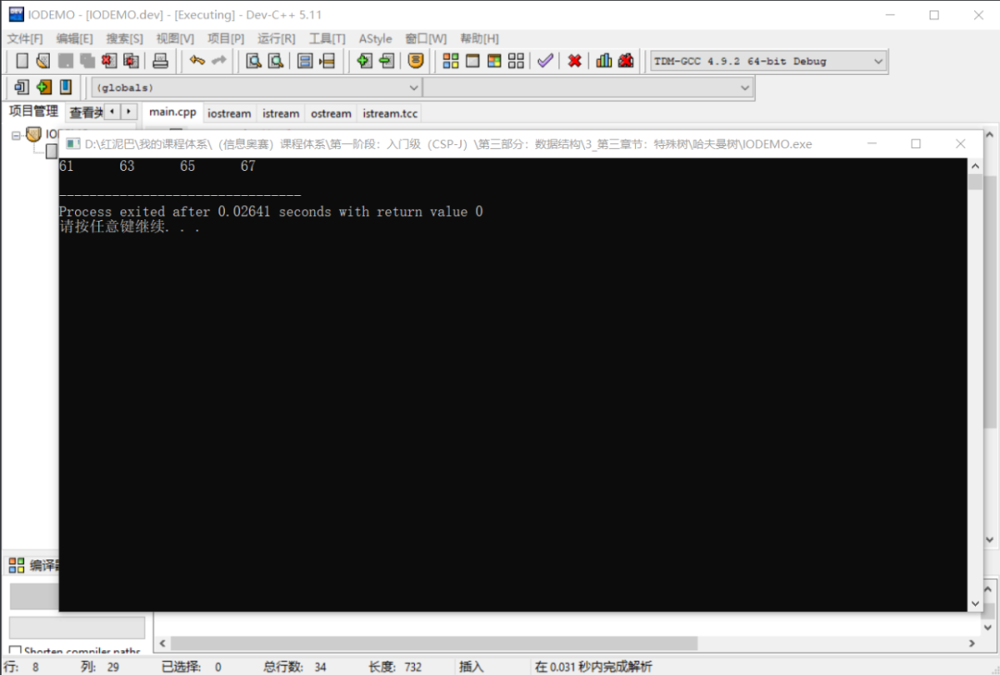

C++ IO流_数据的旅行之路
1. 前言
程序中的数据总是在流动着，既然是流动就会有方向。数据从程序的外部流到程序内部，称为输入；数据从程序内部流到外部称为输出。
C++提供有相应的API实现程序和外部数据之间的交互，统称这类API为 IO 流API。
流是一个形象概念，数据从一端传递到另一端时，类似于水一样在流动，只是流动的不是水，而是数据。
概括而言，流对象可连接 2 端，并在两者之间搭建起一个通道 ，让数据通过此通道流过来、流过去。
2. 标准输入输出流
初学C++时，会接触 cout和cin 两个流对象。
2.1 简介
cout称为标准输出流对象，其一端连接程序，一端连接标准输出设备（标准输出设备一般指显示器），cout的作用是把程序中的数据显示在显示器上。
除了cout，还有cerr，其作用和 cout相似。两者区别：
cout带有数据缓存功能，cerr不带缓存功能。
缓存类似于蓄水池，输出时，先缓存数据，然后再从缓存中输出到显示器上。
cout输出程序通用数据（测试，逻辑结果……），cerr输出错误信息。
另还有一个
clog对象，和cerr类似，与cerr不同之处，带有缓存功能。
cin 称为标准输入流对象，一端连接程序，一端连接标准输入设备（标准输入设备一般指键盘），cin用来把标准输入设备上的数据输入到程序中。
使用 cout和cin时需要包含 iostream头文件。
打开 iostream 源代码，可以看到 iostream文件中包含了另外 2 个头文件：
且在 iostream头文件中可以查找到如下代码：
extern istream cin; /// Linked to standard input
extern ostream cout; /// Linked to standard output
extern ostream cerr; /// Linked to standard error (unbuffered)
extern ostream clog; /// Linked to standard error (buffered)
cout、cerr、clog是 ostream类的实例化对象，cin是 istream 类的实例化对象。
2.2 使用
ostream类重载了<< 运算符，istream类重载了>>运算符，可以使用这 2 个运算符方便、快速地完成输入、输出各种类型数据。打开源代码，可以查看到 <<运算符返回调用者本身。意味着使用 cout<<数据时，返回 cout本身，可以以链式方式进行数据输出。

#include <iostream>
using namespace std;
int main(int argc, char** argv) {
string name="果壳";
int age=12;
//链式输出格式
cout<<"姓名:"<<name<<"年龄："<<age;
return 0;
}
istream类重载了 >>运算符，返回调用者（即 istream 对象）本身，也可以使用链式方式进行输入。

#include <iostream>
using namespace std;
int main(int argc, char** argv) {
char sex;
int age;
//链式输入
cin>>sex>>age;
return 0;
}
cout、cin 流对象的其它方法暂不介绍，继续本文的重点文件流。
3. 文件流
文件流 API完成程序中的数据和文件中的数据的输入与输出，使用时，需要包含 fstream头文件。
3.1 文件输入流
ifstream从 istream类派生，用来实现把文件中的数据l输入（读）到程序中。
输入操作对程序而言，也称为
读操作。
文件输入流对象的使用流程：
3.1.1 建立流通道
使用 ifstream流对象的 open方法建立起程序和外部存储设备中的文件资源之间的流通道。
文件类型分文本文件和二进制文件，本文以读、写文本文件为主。
使用之前，了解一下 open方法的原型说明。打开ifstream头文件，可查看到 ifstream类中有如下的信息说明：
template<typename _CharT, typename _Traits>
class basic_ifstream : public basic_istream<_CharT, _Traits>
{
/**
* @brief Opens an external file.
* @param __s The name of the file.
* @param __mode The open mode flags.
*
* Calls @c std::basic_filebuf::open(s,__mode|in). If that function
* fails, @c failbit is set in the stream's error state.
*
* Tip: When using std::string to hold the filename, you must use
* .c_str() before passing it to this constructor.
*/
void open(const char* __s, ios_base::openmode __mode = ios_base::in)
{
if (!_M_filebuf.open(__s, __mode | ios_base::in))
this->setstate(ios_base::failbit);
else
// _GLIBCXX_RESOLVE_LIB_DEFECTS
// 409. Closing an fstream should clear error state
this->clear();
}
#if __cplusplus >= 201103L
/**
* @brief Opens an external file.
* @param __s The name of the file.
* @param __mode The open mode flags.
*
* Calls @c std::basic_filebuf::open(__s,__mode|in). If that function
* fails, @c failbit is set in the stream's error state.
*/
void open(const std::string& __s, ios_base::openmode __mode = ios_base::in)
{
if (!_M_filebuf.open(__s, __mode | ios_base::in))
this->setstate(ios_base::failbit);
else
// _GLIBCXX_RESOLVE_LIB_DEFECTS
// 409. Closing an fstream should clear error state
this->clear();
}
#endif
}
ifstream重载了 open方法，2 个方法参数数量一致，但第一个参数的类型不相同。调用时需要传递 2 个参数：
- 第一个参数，指定文件的路径。第一个
open方法通过const char* __s类型（字符串指针）接受，第二个open方法通过const std::string& __s类型（字符串对象）接受。 - 第二个参数，指定文件的打开方式。打开方式是一个枚举类型，默认是
ios_base::in(输入)模式。打开模式如下所示：
enum _Ios_Openmode
{
_S_app = 1L << 0,
_S_ate = 1L << 1,
_S_bin = 1L << 2,
_S_in = 1L << 3,
_S_out = 1L << 4,
_S_trunc = 1L << 5,
_S_ios_openmode_end = 1L << 16
};
typedef _Ios_Openmode openmode;
/// 以写的方式打开文件，写入的数据追加到文件末尾
static const openmode app = _S_app;
/// 打开一个已有的文件，文件指针指向文件末尾
static const openmode ate = _S_ate;
/// 以二进制方式打开一个文件，如不指定，默认为文本文件方式
static const openmode binary = _S_bin;
/// 以输入（读）方式打开文件
static const openmode in = _S_in;
/// 以输出（写）方式打开文件，如果没有此文件，则创建，如有此文件，此清除原文件中数据
static const openmode out = _S_out;
/// 打开文件的时候丢弃现有文件里边的内容
static const openmode trunc = _S_trunc;
打开文件实现：
#include <iostream>
#include <fstream>
using namespace std;
int main(int argc, char** argv) {
ifstream inFile;
//文件路径保存在字符数组中
char fileName[50]="d:\\guoke.txt";
inFile.open(fileName,ios_base::in);
//文件路径保存在字符串对象中
string fileName_="d:\\guoke.txt" ;
inFile.open(fileName_,ios_base::in);
return 0;
}
除了直接调用 open方法外，还可以使用 ifstream的构造函数，如下代码，本质还是调用 open方法。
或者：
可以使用ifstream的 is_open方法检查文件是否打开成功。
3.1.2 读数据
打开文件后，意味着输入流通道建立起来，默认情况下，文件指针指向文件的首位置，等待读取操作。
读或写都是通过移动文件指针实现的。
读取数据的方式：
- 使用
>>运算符。
ifstream是istream的派生类，继承了父类中的所有公共方法，如同 cin一样可以使用 >>运算符实现对文件的读取操作。
cin使用>>把标准输入设备上的数据输入至程序。
ifstream使用>>把文件中的数据输入至程序。两者的数据源不一样，目的地一样。
提前在 guoke.txt文件中写入如下内容，也可以用空白隔开数字。

#include <iostream>
#include <fstream>
using namespace std;
int main(int argc, char** argv) {
//用来存储文件中的数据
int nums[10];
//文件输入流对象
ifstream inFile;
//文件路径
char fileName[50]="d:\\guoke.txt";
//打开文件
inFile.open(fileName,ios_base::in);
if(inFile.is_open()) {
//检查文件是否正确打开
cout<<"文件打开成功"<<endl;
//读取文件中的内容
for(int i=0; i<5; i++){
//读取
inFile>>nums[i];
//输出到显示器
cout<<nums[i]<<endl;
}
}
return 0;
}
如上代码，把文件中的 5 个数字读取到 nums 数组中。
用
>>运算符读取时，以换行符、空白等符号作为结束符。
- 使用
get、getline方法。
ifstream类提供有 get、getline方法，可用来读取文件中数据。get方法有多个重载，本文使用如下的 2 个。getline方法和get方法功能相似，其差异之处后文再述。
先在 D盘使用记事本创建guoke.txt文件，并在文件中输入以下 2 行信息：
编写如下代码，使用 get方法以字符类型逐个读取文件中的内容。
#include <iostream>
#include <fstream>
using namespace std;
int main(int argc, char** argv) {
//用来存储文件中的数据
int nums[10];
ifstream inFile;
char fileName[50]="d:\\guoke.txt";
inFile.open(fileName,ios_base::in);
char myChar;
if(inFile.is_open()) {
cout<<"文件打开成功"<<endl;
//以字符为单位读取数据
while(inFile.get(myChar)){
cout<<myChar;
}
}
return 0;
}
//输出结果
this is a test
hello wellcome
读取时，需要知道是否已经达到了文件的末尾，或者说如何知道文件中已经没有数据。
-
如上，使用
get方法读取时，如果没有数据了，会返回false。 -
使用
eof方法。eof的全称是end of file， 当文件指针移动到文件无数据处时，eof方法返回true。建议使用此方法。
while(!inFile.eof()){
inFile.get(myChar);
cout<<myChar;
}
```
使用 `get`的重载方法以`字符串`类型读取。
```cpp
#include <iostream>
#include <fstream>
using namespace std;
int main(int argc, char** argv) {
//用来存储文件中的数据
int nums[10];
ifstream inFile;
char fileName[50]="d:\\guoke.txt";
inFile.open(fileName,ios_base::in);
char myChar[100];
if(inFile.is_open()) {
cout<<"文件打开成功"<<endl;
while(!inFile.eof() ) {
//以字符串为单位读取
inFile.get(myChar,100);
cout<<myChar<<endl;
//为什么要调用无参的 get 方法？
inFile.get();
}
}
return 0;
}
输出结果：

上述 get方法以字符串为单位进行数据读取，会把读出来的数据保存在第一个参数 myChar数组中，第二个参数限制每次最多读 num-1个字符。
如果把上述的
改成
则程序运行结果如下：

第一次读了 9 个字符后结束 ，第二次遇到到换行符后结束，第三行读了 9 个字符后结束，第四行遇到文件结束后结束 。
为什么在代码要调用无参 get方法？
因为get读数据时会把换行符保留在缓存器中，在读到第二行之前，需要调用无参的 get方法提前清除（读出）缓存器。否则后续数据读不出来。
getline和 get方法一样，可以以字符串为单位读数据，但不会缓存换行符（结束符）。如下同样可以读取到文件中的所有内容。
- 使用
read方法。
除了get和getline方法还可以使用 read方法。方法原型如下：
istream &read( char *buffer, streamsize num );
#include <iostream>
#include <fstream>
using namespace std;
int main(int argc, char** argv) {
//用来存储文件中的数据
int nums[10];
ifstream inFile;
char fileName[50]="d:\\myinfo.txt";
inFile.open(fileName,ios_base::in);
char myChar[100];
if(inFile.is_open()) {
cout<<"文件打开成功"<<endl;
inFile.read(myChar,100);
cout<<myChar;
}
return 0;
}
read一次性读取到num个字节或者遇到 eof（文件结束符）停止读操作。这点和 get和getline不同，后者以换行符为结束符号。
3.1.3 关闭文件
读操作结束后，需要关闭文件对象。
3.2 文件输出流
ofstream称为文件输出流，其派生于ostream，用于把程序中的数据输出（写）到文件中。和使用 ifstream的流程一样，分 3 步走：
- 打开文件。
使用 ofstream流对象的 open方法（和 ifstream的 open方法参数说明一样）打开文件，因为写操作，打开的模式默认是ios_stream::out，当然，可以指定其它的如ios_stream::app模式。
#include <iostream>
#include <fstream>
using namespace std;
int main(int argc, char** argv) {
//输出流对象
ofstream outFile;
char fileName[50]="d:\\guoke.txt";
outFile.open(fileName,ios_base::out);
if (outFile.is_open()){
cout<<"打开文件成功"<<endl;
}
return 0;
}
-
写操作和读操作一样，有
2种方案： -
使用
<<运算符。
#include <iostream>
#include <fstream>
using namespace std;
int main(int argc, char** argv) {
//输出流对象
ofstream outFile;
char fileName[50]="d:\\guoke.txt";
outFile.open(fileName,ios_base::out);
if (outFile.is_open()){
cout<<"打开文件成功"<<endl;
for(int i=0;i<10;i++){
//向文件中写入 10 个数字
outFile<<i;
}
}
return 0;
}
输出结果：
- 使用
put、write方法。
put方法以字符为单位向文件中写入数据，put方法原型如下：
ostream &put( char ch );
#include <iostream>
#include <fstream>
using namespace std;
int main(int argc, char** argv) {
//输出流对象
ofstream outFile;
char fileName[50]="d:\\guoke.txt";
outFile.open(fileName,ios_base::out);
if (outFile.is_open()){
cout<<"打开文件成功"<<endl;
for(int i=0;i<10;i++){
//写入 10 个大写字母
outFile.put(char(i+65) );
}
}
return 0;
}
write可以把字符串写入文件中，如下为write方法原型：
参数说明：
- 第一个参数：
char类型指针。 - 第二个参数：限制每次写入的数据大小。
#include <iostream>
#include <fstream>
using namespace std;
int main(int argc, char** argv) {
//输出流对象
ofstream outFile;
char fileName[50]="d:\\guoke.txt";
outFile.open(fileName,ios_base::out);
char infos[50]="thisisatest";
if (outFile.is_open()){
cout<<"打开文件成功"<<endl;
outFile.write(infos,50);
}
return 0;
}
文件中内容：
如果把
改成
则文件中内容为
- 关闭资源。
操作完成后，需要调用close方法关闭文件。
4. 随机访问文件
随机访问指可以根据需要移动二进制文件中的文件指针，随机读或写二进制文件中的内容。
随机访问要求打开文件时，指定文件打开模式为
ios_base::binary。
随机读写分 2 步：
- 移动文件指针到读写位置。
- 然后读或写。
随机访问的关键是使用文件指针的定位方法进行位置定位：
gcount() 返回最后一次输入所读入的字节数
tellg() 返回输入文件指针的当前位置
seekg(文件中的位置) 将输入文件中指针移到指定的位置
seekg(位移量，参照位置) 以参照位置为基础移动若干字节
tellp() 返回输出文件指针当前的位置
seekp(文件中的位置) 将输出文件中指针移到指定的位置
seekp(位移量，参照位置) 以参照位置为基础移动若干字节
如下代码，使用文件输出流向文件中写入数据，然后随机定位文件指针位置，再进行读操作。
#include<fstream>
#include<iostream>
using namespace std;
int main() {
int i,x;
// 以写的模式打开文件
ofstream outfile("d:\\guoke.txt",ios_base::out | ios_base::binary);
if(!outfile.is_open()) {
cout << "open error!";
exit(1);
}
for(i=1; i<100; i+=2)
//向文件中写入数据
outfile.write((char*)&i,sizeof(int));
outfile.close();
//输入流
ifstream infile("d:\\guoke.txt",ios_base::in|ios_base::binary);
if(!infile.is_open()) {
cout <<"open error!\n";
exit(1);
}
//定位
infile.seekg(30*sizeof(int));
for(i=0; i<4 &&!infile.eof(); i++) {
//读数据
infile.read((char*)&x,sizeof(int));
cout<<x<<'\t';
}
cout <<endl;
infile.close();
return 0;
}
原文件中内容：
代码执行后的运行结果，并没有输入文件中的所有内容。

5. 总结
本文讲述了标准输入、输出流和文件流对象。